تعديلات عرض الموبايل
لقطات من الموقع المنشور بعرض 375px. في كل قسم: الشكل الحالي أولًا، ثم الشكل المقترح بعد تطبيق التعديلات مؤقتًا على الصفحة نفسها. طول الصفحة ينخفض من 10,264px إلى 8,645px، بدون أي تمرير أفقي جديد.
١. الهيدر والعنوان الرئيسي
الهيدر أصغر ولا يبقى ثابتًا أعلى الشاشة على الموبايل، فلا يغطي المحتوى أثناء التمرير. والعنوان موزّع على الأسطر بالتساوي بدل نزول كلمة «يوم.» وحدها.
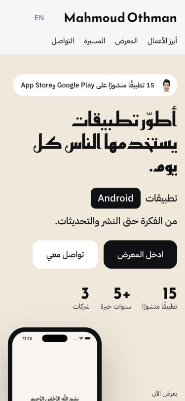
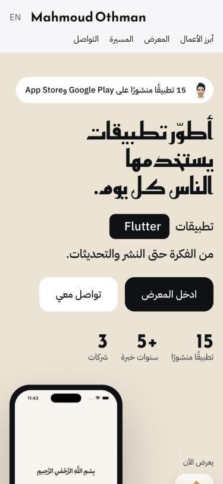
٢. المعرض
قائمة التطبيقات تصبح شبكة أيقونات من 4 أعمدة تظهر كلها مرة واحدة بدل التمرير الأفقي. والجهاز أصغر، فتقترب بطاقة التفاصيل ويرى الزائر التغيير بعد اختيار تطبيق. وأزرار التصنيف تنزل لسطر ثانٍ عند الحاجة بدل أن تنكسر.
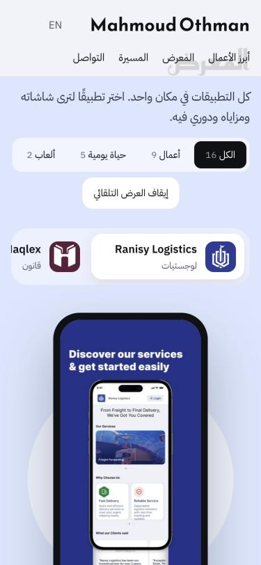
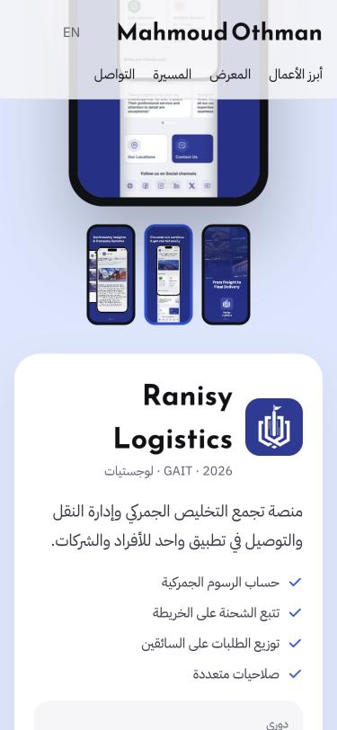
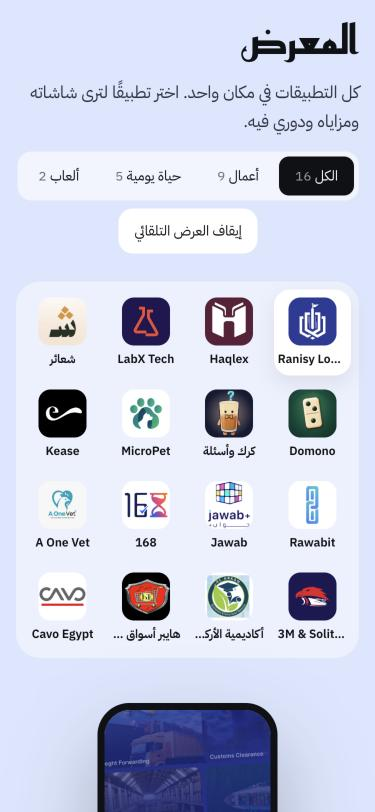
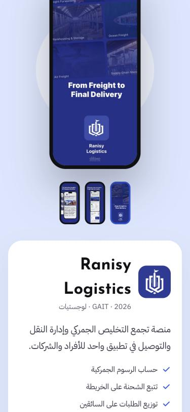
٣. الإحصائيات وخطوات العمل والمسيرة
قسم الإحصائيات المكرر يُخفى على الموبايل لأن الأرقام نفسها موجودة في الواجهة الرئيسية. وخطوات العمل والمسيرة تصبح بطاقات أصغر في عمودين، فتظهر الأربع معًا بدل 4 بطاقات طويلة فوق بعضها.
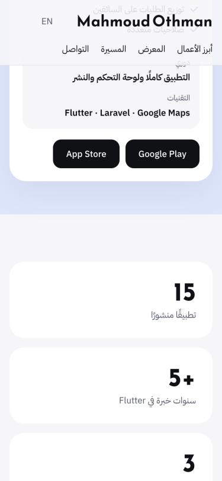
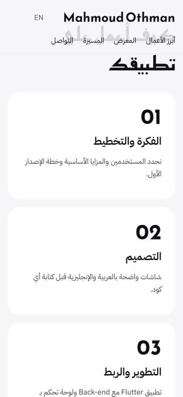
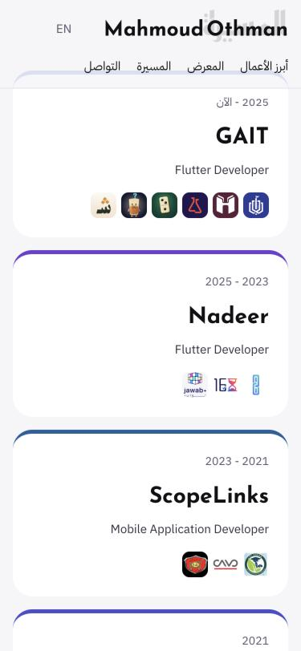
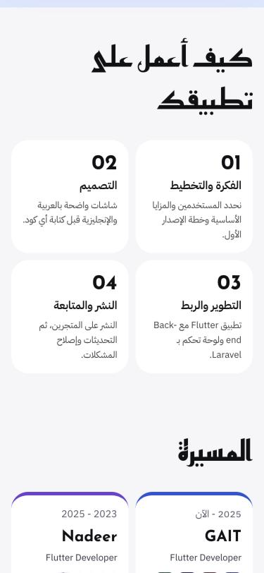
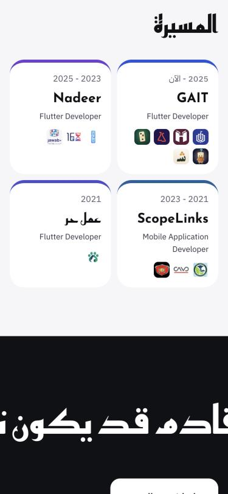